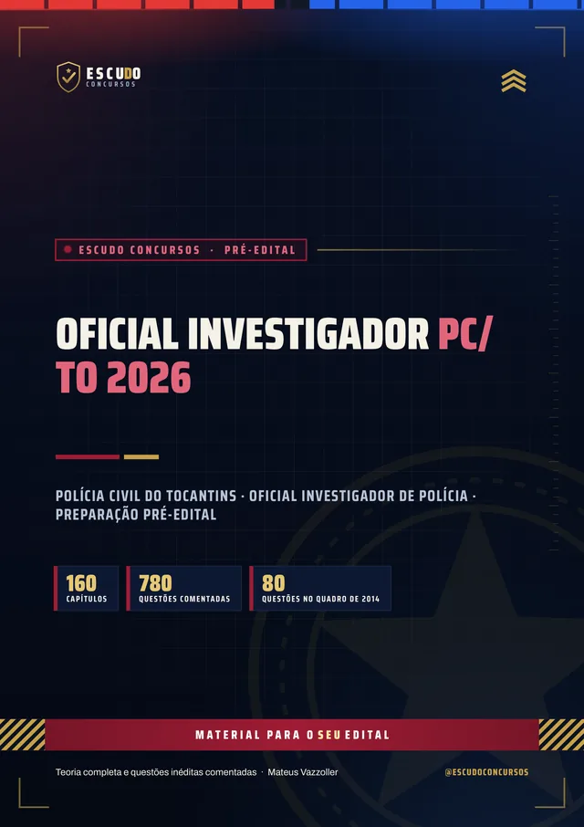
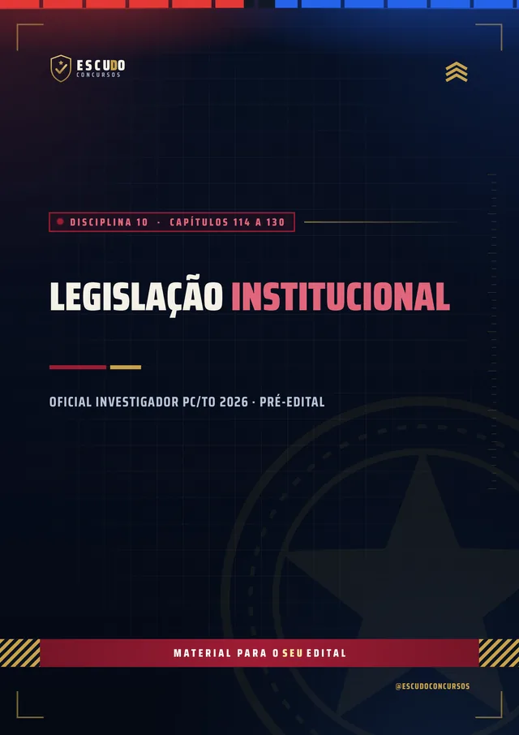
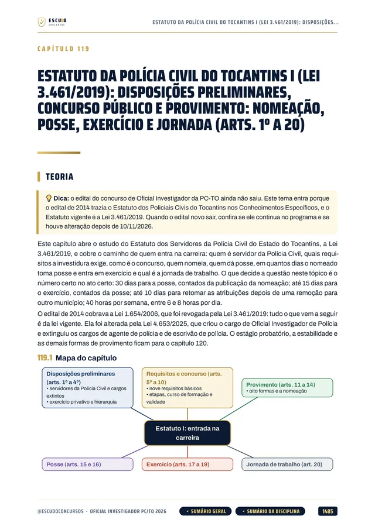
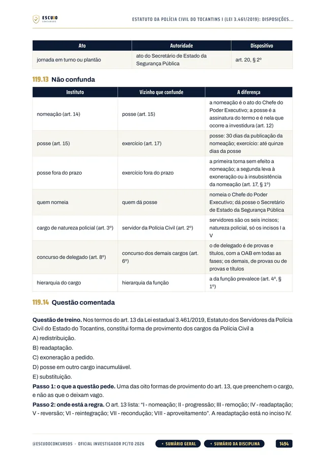
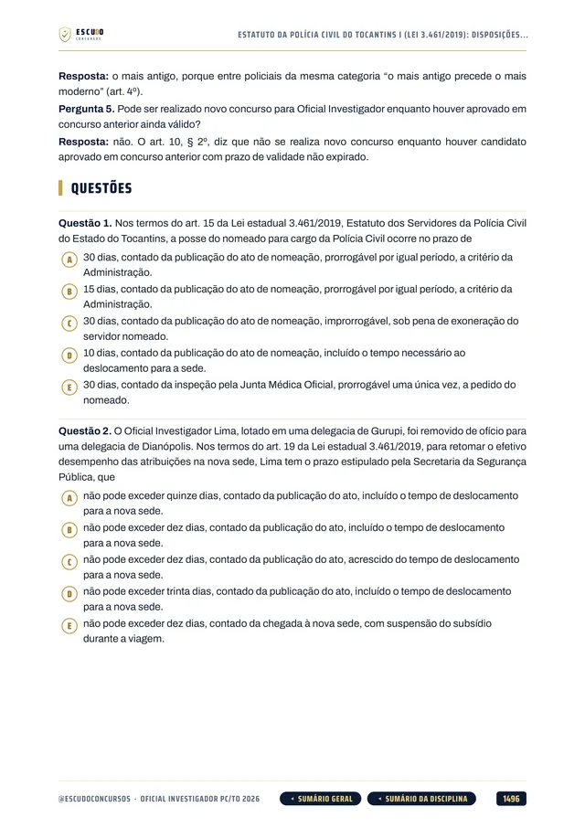
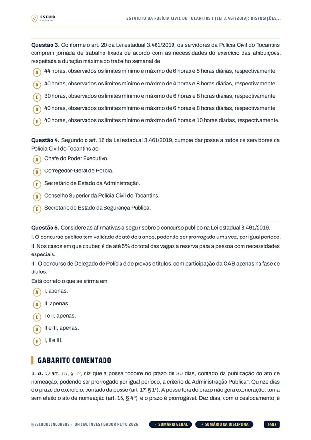
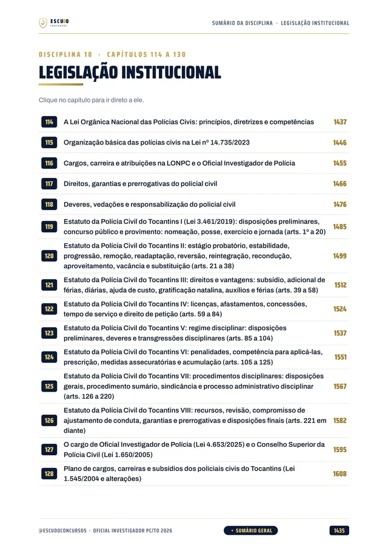
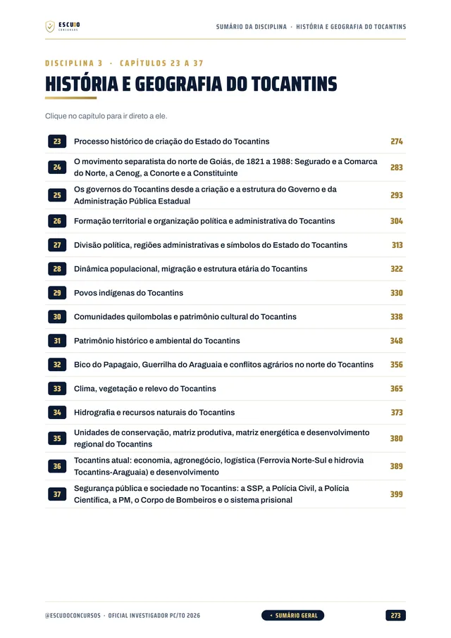
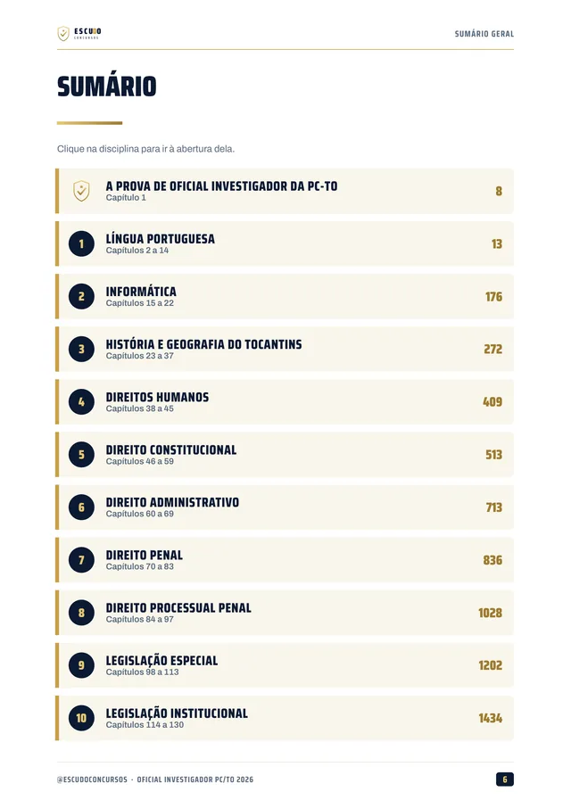
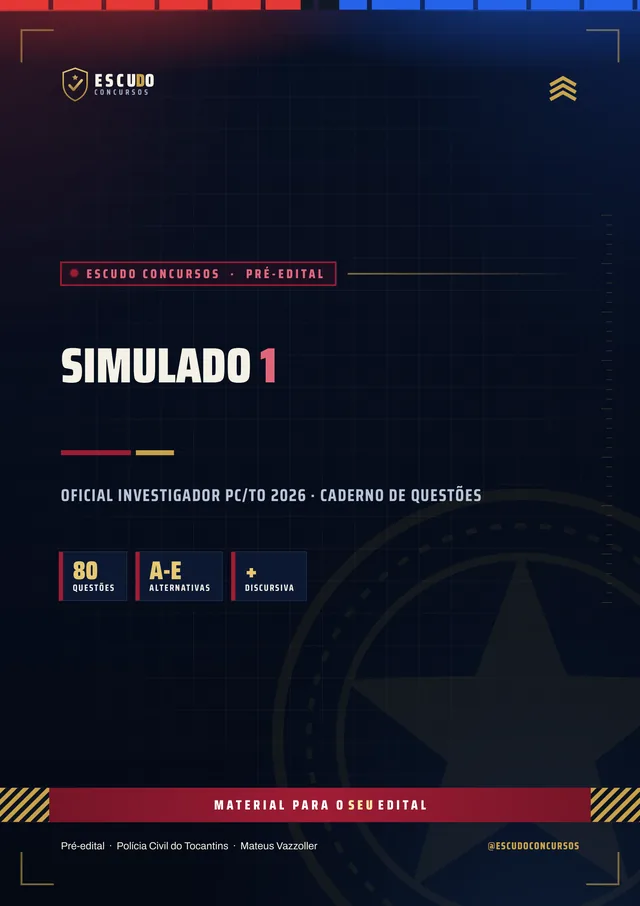

Simulado 1
No meio do caminho
Para medir onde você está e ajustar o estudo enquanto o edital não sai.
30 dias após a compra
Material independente, sem vínculo com o Governo do Tocantins nem com a Polícia Civil do Tocantins.


780questões
comentadas
ConcursoPC/TO2026 · Oficial Investigador
Briefing
O governo do Tocantins já autorizou o novo concurso de Oficial Investigador da Polícia Civil, com 323 vagas, e o edital ainda não saiu. Quem começa agora chega na frente. Curso feito sobre o último edital do cargo (Edital nº 002/2014, Fundação Aroeira), item por item, com o Estatuto da Polícia Civil do Tocantins (Lei 3.461/2019) e questões de 5 alternativas com gabarito comentado.
Pré-edital: baseado no último edital (002/2014). Atualizado quando sair o novo
de R$ 47 por 21% OFF
R$37
com o cupom PCTO37 até 31/12/2026. Pelo botão, o cupom já vai preenchido.
R$47
Curso completo, com acesso imediato.
Terreno
O concurso
O governo do Tocantins autorizou o novo concurso da Polícia Civil, e o Termo de Referência, publicado em 08/09/2026, prevê 323 vagas de Oficial Investigador de Polícia, entre 452 no total (com Delegado e Perito Oficial). O edital ainda não foi publicado: a banca organizadora não foi contratada, e não há data de inscrição nem de prova.
Por isso o curso segue o programa e o formato do último edital do cargo, o Edital nº 002/2014 (Fundação Aroeira), cuja prova foi aplicada em 01/06/2014. De lá para cá, a Lei 4.653/2025 criou o cargo de Oficial Investigador e uniu Agente e Escrivão de Polícia, e o Estatuto da Polícia Civil passou a ser a Lei 3.461/2019. O curso cobre as duas frentes do cargo novo, no texto vigente em 10/11/2026.
Estudar agora pelo programa do último edital economiza meses. Quando o edital novo sair, o programa será conferido item por item e o curso, ajustado. O Termo de Referência também prevê uma redação sobre conhecimentos específicos: o curso traz capítulos para a prova discursiva.
| Bloco | Disciplinas | Questões |
|---|---|---|
| LP | Língua Portuguesa | 10 |
| INF | Informática | 10 |
| HG | História e Geografia do Tocantins | 10 |
| DH | Noções de Direitos Humanos | 10 |
| EST | Estatuto dos Policiais Civis do Tocantins | 10 |
| ADM | Direito Administrativo | 4 |
| CF | Direito Constitucional | 4 |
| DP | Direito Penal | 10 |
| DPP | Direito Processual Penal | 8 |
| LE | Legislação Especial | 4 |
| Prova objetiva de 100 pontos. Em 2014, as 40 questões de conhecimentos básicos valiam 1 ponto cada e as 40 de específicos, 1,5 ponto; o mínimo era de 20 pontos nos básicos, 30 nos específicos e 50 no total. | 80 |
Atualização
Legislação do Tocantins e do cargo
Legislação Institucional em 17 capítulos: a Lei Orgânica Nacional das Polícias Civis (Lei 14.735/2023), o Estatuto da Polícia Civil do Tocantins (Lei 3.461/2019), a Lei 4.653/2025, a Lei 1.545/2004 e a Constituição do Tocantins, no texto vigente em 10/11/2026.
O cargo novo, explicado: a Lei 4.653/2025 criou o Oficial Investigador de Polícia e extinguiu os cargos de Agente de Polícia e de Escrivão de Polícia. O curso mostra o que mudou no Estatuto e nas atribuições, e onde a prova de 2014 já não vale.
História e Geografia do Tocantins em 15 capítulos: a criação do Estado, o movimento separatista, os governos, a divisão política, a população, os povos indígenas e as comunidades quilombolas, o clima, a hidrografia e a economia, com fonte oficial.
Prova discursiva e bloco "Pode cair": 3 capítulos de redação sobre conhecimentos específicos e 27 capítulos sobre cartório, relatório de investigação, arquivologia, análise de dados, estatística, contabilidade e análise financeira, temas que o cargo novo pode cobrar.
Protocolo
O formato
Você estuda lendo, no seu ritmo, pela área de membros da Hotmart ou com os arquivos baixados. O curso segue o programa do último edital do cargo (Edital nº 002/2014), disciplina por disciplina, com a legislação do Tocantins conferida no texto oficial vigente em 10/11/2026. Quando sair o edital novo, vale o que ele disser.
Reconhecimento
Páginas reais do PDF
Toque numa página para ver em tamanho maior.





100% em PDF · Garantia de 7 dias · Pagamento pela Hotmart
Equipamento
O que você recebe
Curso em PDF organizado em 26 módulos (24 pelas disciplinas e temas da prova e 2 de simulado), com mais de 1.900 páginas no padrão visual ESCUDO, para ler no computador, no tablet, no celular ou no app da Hotmart. Não há videoaulas.
160 capítulos cobrindo o programa do último edital e o cargo novo: Língua Portuguesa, Informática, História e Geografia do Tocantins, Direitos Humanos, Direito Constitucional, Administrativo, Penal e Processual Penal, Legislação Especial e Legislação Institucional.
780 questões inéditas com 5 alternativas, de (A) a (E), todas com gabarito comentado: por que a correta está correta e onde está o erro de cada uma das outras.
Legislação Institucional em 17 capítulos, com a Lei Orgânica Nacional das Polícias Civis, o Estatuto da Polícia Civil do Tocantins, a Lei 4.653/2025 e a Constituição do Tocantins, no texto vigente.

História e Geografia do Tocantins em 15 capítulos, com fonte oficial, e Direito Penal e Processual Penal em 28, da teoria do crime ao inquérito, às provas e às prisões.

Prova discursiva em 3 capítulos e o bloco "Pode cair" em 27, para os temas que o edital novo pode trazer.
Pegadinhas e quadros "não confunda" ao longo da teoria, para você não cair nas armadilhas que a banca costuma montar.
Teoria com recursos para memorizar: mapa de cada capítulo, esquemas, revisão relâmpago e teste de memória no fim de cada capítulo.
Navegação clicável: do sumário você vai direto à disciplina e ao capítulo, e volta pelos botões do rodapé.

2 simulados inéditos de 80 questões de A a E, no quadro da prova de 2014, com a prova discursiva e cadernos de comentários.

Plano de ação
Área de membros
| Módulo | Conteúdo | Liberação |
|---|---|---|
| M0 Comece aqui | Apresentação + capítulo 001 (como é a prova e como usar o curso). Bônus: PDF completo para baixar e imprimir | Na compra; o PDF completo no 8º dia |
| M1 Língua Portuguesa I | Capítulos 002 a 008 | Na compra |
| M2 Língua Portuguesa II | Capítulos 009 a 014 | Na compra |
| M3 Informática | Capítulos 015 a 022 | Na compra |
| M4 História e Geografia do Tocantins I | Capítulos 023 a 030 | Na compra |
| M5 História e Geografia do Tocantins II | Capítulos 031 a 037 | Na compra |
| M6 Direitos Humanos | Capítulos 038 a 045 | Na compra |
| M7 Direito Constitucional I | Capítulos 046 a 052 | Na compra |
| M8 Direito Constitucional II | Capítulos 053 a 059 | Na compra |
| M9 Direito Administrativo | Capítulos 060 a 069 | Na compra |
| M10 Direito Penal I | Capítulos 070 a 076 | Na compra |
| M11 Direito Penal II | Capítulos 077 a 083 | Na compra |
| M12 Direito Processual Penal I | Capítulos 084 a 090 | Na compra |
| M13 Direito Processual Penal II | Capítulos 091 a 097 | Na compra |
| M14 Legislação Especial I | Capítulos 098 a 105 | Na compra |
| M15 Legislação Especial II | Capítulos 106 a 113 | Na compra |
| M16 Legislação Institucional I | Capítulos 114 a 118 | Na compra |
| M17 Legislação Institucional II | Capítulos 119 a 124 | Na compra |
| M18 Legislação Institucional III | Capítulos 125 a 130 | Na compra |
| M19 Prova Discursiva | Capítulos 131 a 133 | Na compra |
| M20 Pode cair I | Capítulos 134 a 142 | Na compra |
| M21 Pode cair II | Capítulos 143 a 147 | Na compra |
| M22 Pode cair III | Capítulos 148 a 152 | Na compra |
| M23 Pode cair IV | Capítulos 153 a 160 | Na compra |
| M24 Simulado 1 | 80 questões e caderno de comentários | 30 dias após a compra |
| M25 Simulado 2 | 80 questões e caderno de comentários | 60 dias após a compra |
Treinamento
Treino no formato da prova
Cada simulado tem 80 questões de A a E, no quadro da prova de 2014 (Língua Portuguesa, Informática, História e Geografia do Tocantins, Direitos Humanos, Estatuto, Administrativo, Constitucional, Penal, Processual Penal e Legislação Especial), mais a prova discursiva, com cadernos de comentários. O formato será conferido quando o edital novo sair.
Simulado 1
Para medir onde você está e ajustar o estudo enquanto o edital não sai.
30 dias após a compra
Simulado 2
Para conferir a evolução depois de mais um mês de estudo.
60 dias após a compra
Perfil
Para quem é
Para quem vai prestar o concurso de Oficial Investigador da Polícia Civil do Tocantins e quer começar agora, pelo programa do último edital, com o Estatuto da Polícia Civil e a legislação do cargo cobertos por inteiro.
Proteção
Você tem 7 dias de garantia pela Hotmart. Se não for o que você esperava, pede o reembolso pela própria Hotmart, dentro do prazo.
Cronograma
Sem surpresa na área de membros
Na compra: todas as disciplinas em PDF, uma por módulo, com a teoria e as questões comentadas. É o curso inteiro, para começar a estudar no mesmo dia.
8 dias após a compra: o PDF completo para imprimir. É o mesmo conteúdo dos módulos num arquivo só, liberado depois da garantia de 7 dias.
Simulado 1: 30 dias após a compra, para medir onde você está no meio da preparação.
Simulado 2: 60 dias após a compra, porque ainda não há data de prova marcada.
O PDF completo e os simulados aparecem bloqueados na área de membros até a data de cada um: não é conteúdo faltando, é a liberação programada.
Instrução
Dúvidas
Não. É um curso 100% em PDF: teoria, questões comentadas e simulados para ler e resolver.
O acesso é imediato depois da confirmação do pagamento, pela área de membros da Hotmart (web ou app). O PDF completo para baixar e imprimir é liberado no 8º dia.
O Simulado 1 é liberado 30 dias após a compra e o Simulado 2, 60 dias após a compra.
Vale. O concurso foi autorizado, mas a banca ainda não foi contratada e o edital não tem data. O grosso da prova (Português, Informática, Direitos Humanos, Direito Constitucional, Administrativo, Penal, Processual Penal e Legislação Especial) não depende do edital novo, e o curso já traz a legislação do Tocantins e do cargo conferida no texto oficial. Quando o edital sair, vale o que ele disser.
Ainda não existe: o edital novo não foi publicado. O curso segue o programa do último edital do cargo (Edital nº 002/2014, Fundação Aroeira): Língua Portuguesa, Informática, História e Geografia do Tocantins, Direitos Humanos, Estatuto dos Policiais Civis, Direito Administrativo, Constitucional, Penal, Processual Penal e Legislação Especial. Acrescenta a legislação nova do cargo (Lei Orgânica Nacional das Polícias Civis, Lei 4.653/2025 e Estatuto vigente), a prova discursiva e o bloco "Pode cair", que o edital novo pode trazer.
Ainda não foi definida: a contratação está pendente. O concurso de 2014 foi feito pela Fundação Aroeira. Enquanto isso, as questões do curso seguem um estilo neutro: cinco alternativas e cobrança fiel ao texto da lei. Quando a banca for conhecida, o curso será ajustado ao estilo dela.
Ainda não há edital novo. O Termo de Referência de 08/09/2026 prevê 80 questões objetivas para Oficial Investigador e uma redação sobre conhecimentos específicos. No último edital (2014), a prova objetiva teve 80 questões de múltipla escolha com quatro alternativas, valendo 100 pontos, com mínimo de 20 pontos nos conhecimentos básicos, 30 nos específicos e 50 no total. O curso treina com cinco alternativas, de (A) a (E), e será conferido quando o edital sair.
Não. As 780 questões de treino e as dos simulados são inéditas, escritas a partir do programa do último edital.
Você tem 7 dias de garantia pela Hotmart. Se não for o que você esperava, pede o reembolso.
Missão
PC/TO 2026 · Oficial Investigador
de R$ 47 por 21% OFF
R$37
com o cupom PCTO37 até 31/12/2026.
R$47
Curso completo, com acesso imediato.
Material para o SEU edital. ESCUDO Concursos.
Continue estudando